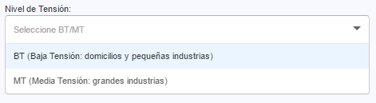

Paso 4: Agregue los datos para el suministro o empalme1. Selecccione el nivel de tensión a contratar.
1. Selecccione el nivel de tensión a contratar.
-

Baja Tensión ( BT )
Pertenecen a esta denominación todos los domicilios, residenciales y pequeños negocios. -
Media Tensión (MT)
Pertenecen a esta categoría todas las grandes industrias que requieren grandes cantidades de energía.
